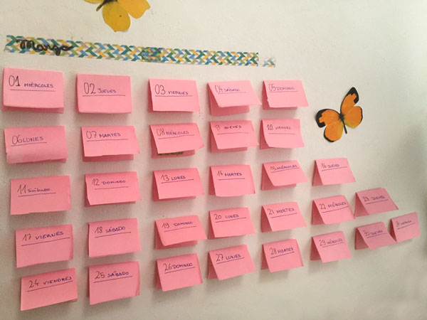
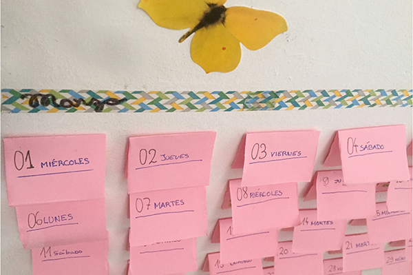

Post its, doblados decoran la pared.
Se pueden usar para aprender los dias de la semana. O solo para organizar el verano.



Post its, doblados decoran la pared.
Se pueden usar para aprender los dias de la semana. O solo para organizar el verano.

Noah ha cortado la parte de bajo de una botella, luego ha pegado una tira de papel el la parte superior para tapar el canto. Con…
Leer más →
Wonderful World Practicar idiomas Elige una cancion que te gusta y busca su letra y su traduccion (por ejemplo aquí: letraseningles , lyricstranslate ). Hemos empezado…
Leer más →
Por fin el libro de las semillas, mas profesional que en este post . Hemos pegado tiras de Papel entre los sobres y los sobres un…
Leer más →
Hace 7 años. Hannah escribía los nombres de las chicas de su clase usando letras de fideos. Regreso a la escuela! Dibuja y pinta a tus…
Leer más →